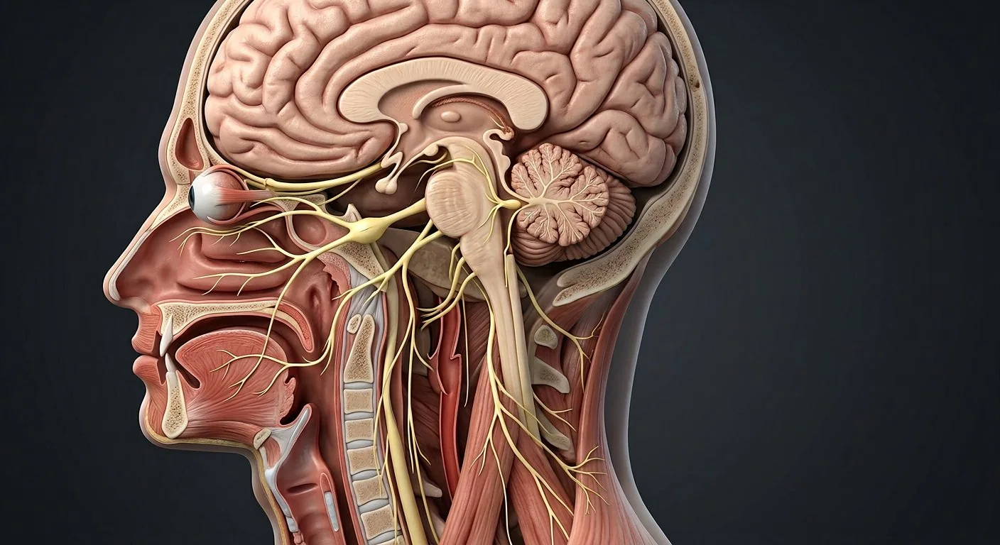

I · Olfactory nerveII · Optic nerveIII · Oculomotor nerveIV · Trochlear nerveVI · Abducens nerveBrainstemV · Trigeminal nerveVIII · Vestibulocochlear nerveVII · Facial nerveIX · Glossopharyngeal nerveX · Vagus nerveXII · Hypoglossal nerveXI · Accessory nerve- 01I · Olfactory nerve
- 02II · Optic nerve
- 03III · Oculomotor nerve
- 04IV · Trochlear nerve
- 05V · Trigeminal nerve
- 06VI · Abducens nerve
- 07VII · Facial nerve
- 08VIII · Vestibulocochlear nerve
- 09IX · Glossopharyngeal nerve
- 10X · Vagus nerve
- 11XI · Accessory nerve
- 12XII · Hypoglossal nerve
- 13Brainstem
How this part of the body works
Deep dive: each nerve with its nucleus, route and lesion. Mnemonics live in the clinical notes.
Read the anatomy, part by part
These 13 structures describe anatomy related to the chapter’s regional illustration. Each entry separates location, function and a clinical point.
I · Olfactory nerve
Sensory filaments from nasal epithelium to bulb.
What it doesSmell.
Clinical connectionLesion: anosmia — test each nostril with coffee.
II · Optic nerve
Retinal ganglion axons to the chiasm.
What it doesVision.
Clinical connectionPapilloedema signals raised intracranial pressure.
III · Oculomotor nerve
Midbrain nerve to four eye muscles + lid + pupil.
What it doesEye elevation/adduction, lid lift, pupil constriction.
Clinical connectionFirst sign of uncal herniation: a blown pupil.
IV · Trochlear nerve
Thinnest cranial nerve; exits dorsally.
What it doesSuperior oblique — looks down and in.
Clinical connectionPalsy: double vision on stairs.
V · Trigeminal nerve
Three divisions: ophthalmic, maxillary, mandibular.
What it doesFace sensation + muscles of mastication.
Clinical connectionTrigeminal neuralgia: electric shock pain in V2/V3.
VI · Abducens nerve
Long intracranial course to lateral rectus.
What it doesEye abduction.
Clinical connectionFalse-localising sign in raised ICP.
VII · Facial nerve
Motor to face, taste anterior 2/3, lacrimal/salivary.
What it doesFacial expression.
Clinical connectionBell's palsy spares forehead? No — LMN hits whole side.
VIII · Vestibulocochlear nerve
Two bundles: cochlear and vestibular.
What it doesHearing and balance.
Clinical connectionAcoustic neuroma: tinnitus + unilateral deafness.
IX · Glossopharyngeal nerve
Taste posterior 1/3, carotid body, stylopharyngeus.
What it doesSwallowing, BP sensing.
Clinical connectionGlossopharyngeal neuralgia: throat pain on swallowing.
X · Vagus nerve
Roams from medulla to pelvic gut.
What it doesParasympathetic to thorax/abdomen, voice.
Clinical connectionHoarseness = recurrent laryngeal branch until proven otherwise.
XI · Accessory nerve
Spinal root from C1–C5 climbs into skull.
What it doesTrapezius and sternocleidomastoid.
Clinical connectionNode biopsy in posterior triangle risks it — shrug weakness.
XII · Hypoglossal nerve
Motor root to tongue muscles.
What it doesTongue movement.
Clinical connectionTongue deviates TO the side of the lesion.
Brainstem
Nuclei of all twelve nerves sit here.
What it doesHouses every cranial nerve nucleus.
Clinical connectionBrainstem stroke can cause crossed signs.
Deeper structures and tissue layers
These 7 additional entries give anatomical context. They are deliberately not assigned a photographic pin on the regional image.
Related deep chapters: Facial nerve · CN VII, Trigeminal nerve · CN V.
Facial motor nucleus
Reference pointerMotor cell bodies in pons send axons looping around abducens nucleus before exit.
What it doesControls muscles of facial expression.
Clinical connectionUpper face often retains bilateral cortical input in supranuclear lesions.
Trigeminal sensory root
Reference pointerLarge sensory root emerges from lateral pons into trigeminal cistern.
What it doesConveys facial somatic sensation centrally.
Clinical connectionBrainstem lesions can combine facial and body sensory findings.
Nervus intermedius
Reference pointerSensory and parasympathetic root accompanying the motor root.
What it doesCarries taste and secretomotor pathways.
Clinical connectionExplains why CN VII is not solely motor.
Trigeminal ganglion
Reference pointerSensory neuron cell bodies in Meckel cave; divides into V1, V2 and V3.
What it doesFirst-order facial sensory neurons.
Clinical connectionClassic site involved in trigeminal neuralgia pathways.
Internal acoustic meatus
Reference pointerTemporal-bone canal shared by CN VII, CN VIII and labyrinthine artery.
What it doesConveys nerve toward facial canal.
Clinical connectionLesions here may affect facial movement and hearing/balance.
Ophthalmic V1
Reference pointerPasses superior orbital fissure into orbit; gives frontal, lacrimal and nasociliary branches.
What it doesSensation from forehead, upper lid and cornea.
Clinical connectionAfferent limb of corneal reflex.
Geniculate ganglion
Reference pointerSensory ganglion at first sharp bend of facial canal; greater petrosal branch arises nearby.
What it doesHouses sensory neuron cell bodies.
Clinical connectionHerpes zoster may affect geniculate region.
Five questions about Cranial nerves
Short answers grounded in the structures described above. Use the illustrated guide for anatomical context.
How many cranial nerves are there?
There are 12 paired cranial nerves, numbered I through XII. Their functions include smell, vision, eye movement, facial sensation, hearing, swallowing and tongue movement.
Which cranial nerve controls facial expression?
The facial nerve, cranial nerve VII, supplies most muscles of facial expression. The trigeminal nerve, cranial nerve V, carries most facial skin sensation.
What is the olfactory nerve (CN I)?
Sensory filaments from nasal epithelium to bulb. Function: Smell.
Where does the oculomotor nerve (CN III) originate?
Midbrain nerve to four eye muscles + lid + pupil. Function: Eye elevation/adduction, lid lift, pupil constriction.
What does the trigeminal nerve (CN V) do?
Function: Face sensation + muscles of mastication. Three divisions: ophthalmic, maxillary, mandibular.
Related anatomy guides
Follow these connected structures and body systems in the illustrated atlas.
 Facial nerve · CN VIITrack facial motor branches, taste, lacrimation and salivation through the temporal bone and parotid gland.↗
Facial nerve · CN VIITrack facial motor branches, taste, lacrimation and salivation through the temporal bone and parotid gland.↗ Trigeminal nerve · CN VMap facial sensation and masticatory motor fibers without confusing trigeminal CN V with facial CN VII.↗
Trigeminal nerve · CN VMap facial sensation and masticatory motor fibers without confusing trigeminal CN V with facial CN VII.↗ Nervous system — overviewOne continuous network: the brain and spinal cord compute, and 43 pairs of peripheral nerves carry orders out and reports back.↗
Nervous system — overviewOne continuous network: the brain and spinal cord compute, and 43 pairs of peripheral nerves carry orders out and reports back.↗ BrainMidsagittal section: cerebrum, diencephalon, brainstem and cerebellum around the ventricular system.↗
BrainMidsagittal section: cerebrum, diencephalon, brainstem and cerebellum around the ventricular system.↗Further reading
General anatomy references and related source chapters for continued study. These links do not make the digital illustrations clinical images or certify every anatomical variant.
This educational page is not medical advice and has not undergone formal clinical peer review. Spotted an error? Contact the editor.
Open the realistic interactive plate, label lines, focus view and self-test.